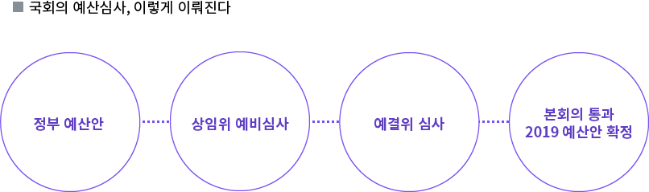

의원님, 예산심사 왜 또 그렇게 하셨어요?
- 2019 국회 예산 회의록 전수분석
SBS 데이터저널리즘팀 [마부작침]은 2018년 1월 국회의 2018 예산회의록을 분석했다. 국회 예산심사 과정에서 법과 예산 편성 원칙을 어기면서, 혹은 편성해도 사용할 수 없다는데도, 어떤 경우엔 논의 흔적을 전혀 남기지 않고 심사했다는 점을 확인해 지적했다.
그리고 1년 뒤, [마부작침]은 국회의 2019 예산회의록을 또 분석했다. 국회 상임위원회 예비심사와 예산결산특별위원회의 심사 내역을, 전체 회의록 5,453페이지를 근거로 분석했다.

국회가 필요하다며 편성한 ‘신규사업’
2019 예산심사 과정에서 국회가 추가 편성한 신규사업은 453개다. 정부가 국회에 제출한 예산안에는 없었지만 국회에서 필요하다며 추가한 이른바 '국회발 신규사업'이다.
꼭 필요한 사업인데도 정부가 간과해 예산안에서 누락했다면 국회가 이를 보완하는 건 긍정적인 일이다. 그런데 453개 사업 모두 꼭 필요한 사업일까?
‘국회발 신규사업’ 453개 9,929억 원
‘국회발 신규사업’ 453개에 편성된 예산은 9,929억 원이다. 가장 규모가 큰 사업은 ‘아동수당 급여’ 사업으로 2,353억 200만 원이 편성됐다. 1,000억 원을 넘는 사업은 ‘아동수당 급여’ 사업이 유일했고, 10억 원과 1억 원 사이의 사업이 282개로 가장 많았다.
국회발 신규사업 75.5%는 ‘지역성 사업’
[마부작침]은 ‘국회발 신규사업’ 가운데 지역성 사업을 따로 분류했다. 지역성 사업은 특정 지역에 뭔가를 짓거나 조사하는 등 예산을 투입하는 사업인데 지역구 의원의 성과와 밀접하게 연관된 것으로 볼 수 있다. 2019년 ‘국회발 신규사업’ 453개 가운데 지역성 사업은 342건, 75.5%로 파악됐다. 지역성 사업에 편성된 예산은 5,093억 원이다.
2년 이상 연속 ‘국회발 신규사업’
정부가 2018년 예산안에도, 2019년 예산안에도 편성하지 않았는데 국회가 예산심사를 하면서 2년 연속 추가한 사업들이 있다. 모두 28개 사업이다. ‘서울시 노후하수관로 정비’는 국회가 현행 법령을 어기면서 계속 편성하고 있다. ‘교사겸직원장 지원비’와 ‘부산항축제 지원’ 사업은 2015년부터 5년 연속 '국회발 신규사업'으로 편성됐다. ‘영일만 횡단 고속도로’는 4년 연속, ‘해외건설인의 날’과 ‘청소년트로트가요제’, ‘서울 K-POP 공연 지원’은 3년 연속이다. 대부분 '지역성 사업'이다. 지역의 요구는 이렇게 예산에 반영된다. 그리고 국회의원들의 치적, 성과가 된다.
논의 흔적 없는 ‘깜깜이’ 신규사업
[마부작침] 분석 결과 2019년 예산에 반영된 453개 ‘국회발 신규사업’ 가운데 국회 회의록이나 상임위 예비심사보고서에서 전혀 언급되지 않았던 사업은 128개에 이른다. 전체의 28.3%, 예산 규모는 2,200억 원이다. 2018년 예산안에서 논의 흔적 없는 ‘국회발 신규사업’이 51개(11.4%)였던 것과 비교하면 사업 수로는 2.5배, 예산 규모는 6.4배나 증가했다. ‘깜깜이 신규사업’이 훨씬 많아진 것이다. 논의 흔적 없는 신규사업 중 103개(80.5%)가 지역성 사업이었다.
회의록을 남기는 건 의원들이 어떤 근거와 논리로 예산 심사를 했는지 국민에게 공개한다는 취지다. 내가 낸 세금을 어디에 쓰겠다는 건지 국민은 알 권리가 있고 국민의 대표인 의원들은 이를 엄정하게 심사할 의무가 있다. 그럼에도 '국회발 신규사업'의 30% 정도는 전혀 편성 근거나 이유를 알 수 없다.
마부작침 분석 문제 예산
[마부작침]은 '국회발 신규사업' 453개를 대상으로 국회 예산심사 과정에서 문제가 있어 보이는 사업들을 따로 분류했다.
그 결과 사업성이 낮고 불용 처리될 가능성이 큰데도 편성된 사업은 11개(131억 원), 현행 법령을 어기는 등 정부의 예산 편성 원칙에 맞지 않는 사업은 37개 사업(1,002억 원), 논의도 고민도 없이 '뭉텅이'로 처리된 사업은 114개(1,046억 원)로 분석됐다.
그 결과 사업성이 낮고 불용 처리될 가능성이 큰데도 편성된 사업은 11개(131억 원), 현행 법령을 어기는 등 정부의 예산 편성 원칙에 맞지 않는 사업은 37개 사업(1,002억 원), 논의도 고민도 없이 '뭉텅이'로 처리된 사업은 114개(1,046억 원)로 분석됐다.
사업성 낮고 못 쓴다는데도 편성
법적 근거, 원칙을 무시한 편성
‘뭉텅이’ 처리 예산
*각 점은 국회발 신규사업입니다. 마우스로 클릭하면 각 사업을 논의했던 소관 상임위와 예결위 회의록을 볼 수 있습니다.